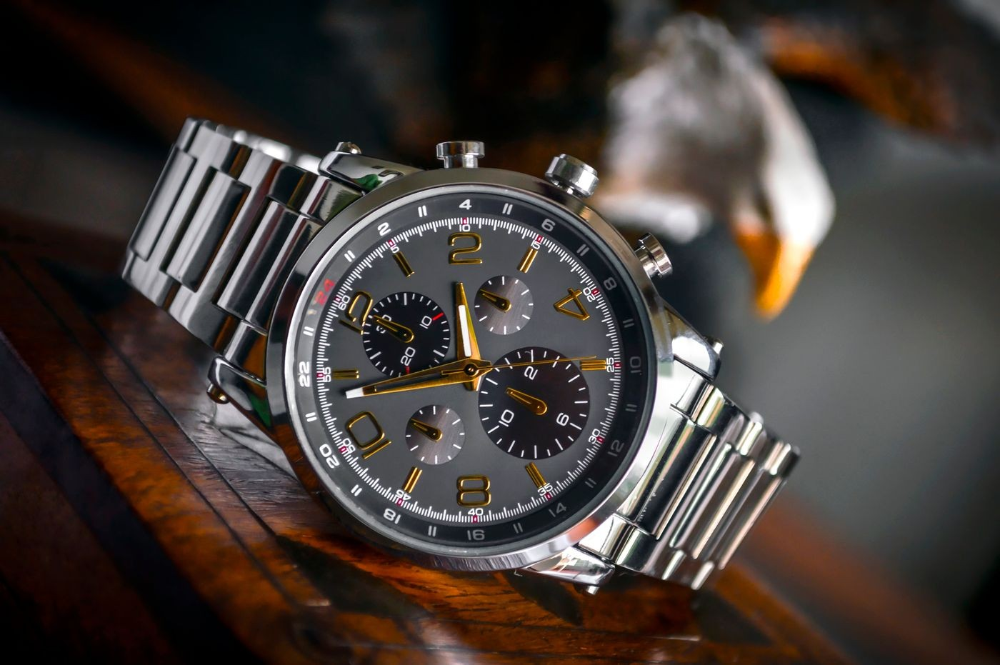
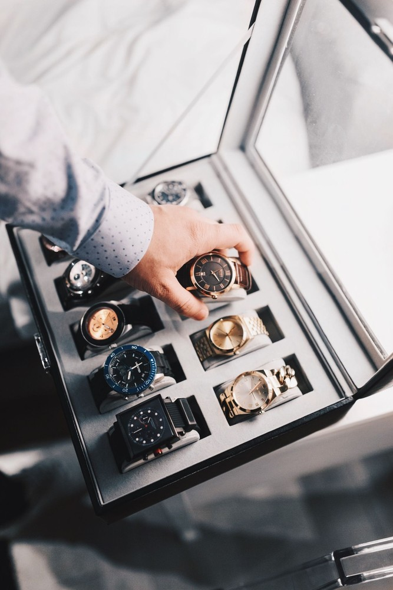

We curate mechanical timepieces the way they were meant to be experienced
Aperture Castle is an independent Boston horological atelier founded on three non-negotiable standards: mechanical calibers of verified chronometric provenance, transparent up-front curatorial valuation, and private viewings conducted by credentialed watchmakers.
Born from frustration with commercial watch showcases
Aperture Castle emerged from a universal collector grievance. Walk into an ordinary retail boutique or secondary platform, navigate opaque waiting lists, endure condescending sales tactics, and acquire a timepiece whose service history and balance amplitude remain completely unknown. Passionate collectors deserve genuine horological transparency.
We established our atelier in Boston's Financial District to treat horology as fine art rather than retail merchandising. We maintain an exacting portfolio of twelve master caliber families, guaranteeing that every balance spring, pallet fork, and escapement receives meticulous inspection on our acoustic timegraphers prior to private presentation.
The name reflects our dual commitment: the camera aperture representing optical clarity into micro-mechanics, and the castle denoting our fortified vault of horological heritage and enduring chronometric longevity.
Exacting chronometric tolerances, rigorously documented

What happens before a timepiece enters our vault
When a mechanical timepiece arrives at One International Place, it immediately undergoes ultrasonic demagnetization and diagnostic timing analysis across five resting positions and three temperature curves. Our master watchmakers disassemble cases to inspect movement bridges for microscopic wear, pivot friction, and lubricant degradation.
Every gear train wheel, escape teeth chamfer, and balance wheel jewel receives hand-applied synthetic micro-lubricants under binocular microscopes. If any component deviates from Geneva seal tolerances, it is recalibrated or replaced with original manufacture parts without compromise.
Finally, we produce an authenticated physical Horological Passport for each watch, complete with high-resolution movement macrographs, timing delta printouts, and pressure testing certificates delivered directly to the collector.
The Three Castle Promises
Authentic Calibers Only
Every watch in our custody houses an authentic mechanical heart. We verify movement serials, bridge bevels, and escapement architecture against manufacturer archives prior to offering.
Transparent Provenance
No arbitrary retail premiums or undisclosed restorations. Every quote itemizes baseline horological valuation, overhaul history, and included curatorial protections line by line.
Watchmakers, Not Salesmen
Our consultation desk is staffed by practicing horologists who understand hairspring terminal curves, column wheels, and balance inertia. Call, and an artisan answers.
The Gravity-Defying Tourbillon & Chronograph Arts
The tourbillon remains the pinnacle of mechanical compensating craftsmanship. By rotating the balance spring, pallet fork, and escape wheel inside a lightweight cage once every sixty seconds, our tourbillon calibers cancel positional gravity errors with hypnotic visual grace.
Similarly, our column-wheel chronographs represent tactile micro-engineering perfection. The crisp mechanical snap of the reset hammer, the silky actuation of lateral clutches, and the surgical subdivision of seconds down to one-eighth increments embody centuries of horological evolution.
Selected Masterpieces from the Castle Vault
Caliber AC-720 Split Chrono
Column-wheel lateral clutch chronograph with 30-minute register and tachymeter scale.
Caliber AC-104 Observatory
Free-sprung Glucydur balance with white gold inertia weights and hand-curved Breguet hairspring.
Caliber AC-17 Heritage Chrono
Traditional lateral clutch column-wheel chronograph caliber with hand-chamfered steel operating levers.
Who We Serve
Our Boston atelier caters to discerning individuals united by an appreciation for mechanical permanence. Discerning collectors seeking rare reference calibers with documented provenance. Executives who require an impeccably regulated chronometer for high-stakes international affairs. And connoisseurs celebrating career milestones who desire an heirloom timepiece that will tick reliably for subsequent generations.
Responsible Horological Stewardship
We preserve horological history through active stewardship. Every antique or pre-owned caliber entering our care is preserved with period-correct oils and techniques, resisting the destructive over-polishing common in commercial auctions. We preserve original case chamfers, patinated tritium dials, and sharp case bevels so historical integrity remains inviolate.
Initiate Private Consultation
Have questions regarding caliber regulation, private salon reservations, or curatorial acquisition? Visit our Boston salon at One International Place, Suite 3100, telephone our horological desk at +1-888-634-8921, or submit an inquiry through our contact page. We examine every communication with dedicated artisan attention.
Experience Haute Horlogerie in Person
Private viewings by appointment at our Financial District salon. No high-pressure sales, only micro-mechanical excellence.